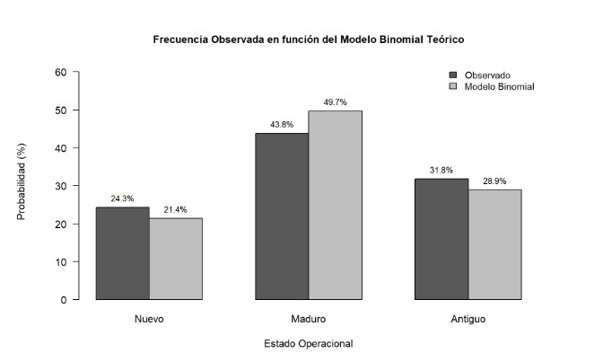
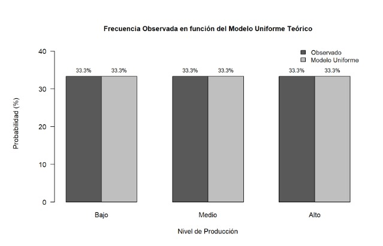
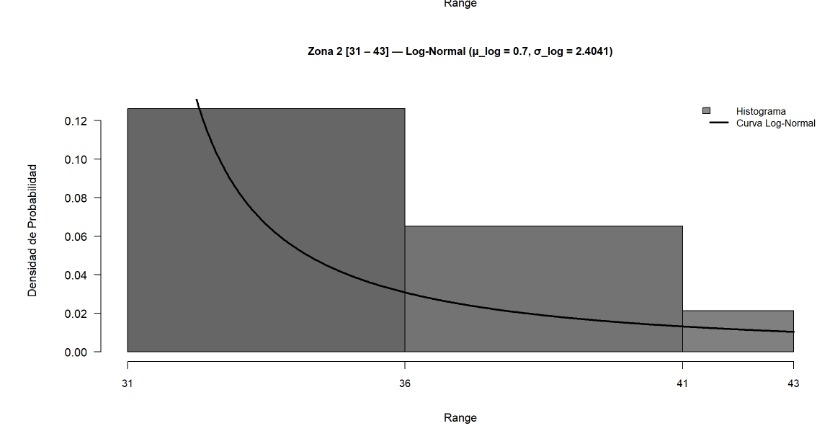

Inferencia y probabilidad
Estadística inferencial
Pruebas de hipótesis y análisis inferencial aplicado a las variables de los arrendamientos de petróleo y gas, para establecer conclusiones sobre la población a partir de la muestra del KGS.
Modelos de probabilidad
Distribuciones de probabilidad aplicadas
Ajuste de modelos de distribución teórica sobre las variables del dataset de arrendamientos de petróleo y gas en Kansas, validados mediante pruebas de bondad de ajuste.

Distribución
Modelo Binomial
Variable: Estado Operacional
Ver análisis completo
Distribución
Modelo Uniforme
Variable: Nivel de Producción
Ver análisis completo
Distribución
Modelo Exponencial
Variable: Años Activo
Ver análisis completo
Distribución
Modelo Normal
Variable: Longitud
Ver análisis completo
Distribución
Modelo Log-Normal
Variable: Range
Ver análisis completo